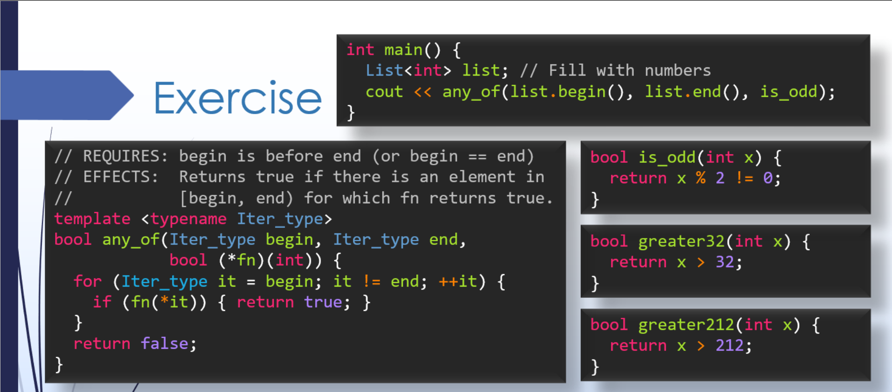
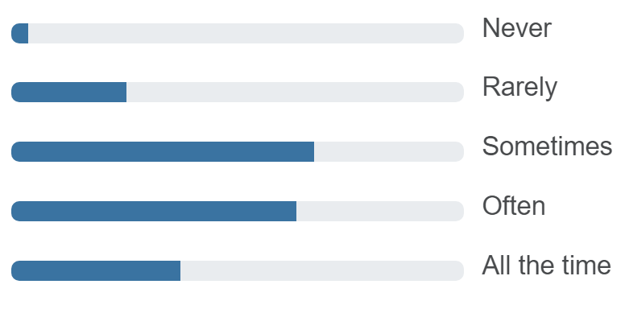

This lecture covers functors in C++, including their use in higher-order functions as predicates and comparators.
Finally, we cover impostor syndrome - a concept not directly related to programming but that is nevertheless relevant for many in our community.
|
1: Iterator Review, Motivating Example
1.1
We'll start by briefly reviewing iterators and setting up the motivation for the main content of today's lecture.
1.1 Exercise:
any_of_even()
Consider the function template Which of the following would need to change in order to implement a similar function Explanation…Beyond changing the function name, the only thing that needs to change is the condition in the The idea of swapping the return statements seems viable at first glace, but on closer inspection, this doesn't change the function to check for evens instead of odds. Rather, it would change the function from "any of" to "none of". |
|
2: Function Pointers
2.1
Building on the previous section and exercise - what if we wanted to check for other criteria besides even and odd numbers? How about prime numbers, or numbers that are greater than a certain threshold? Instead of writing mostly the same code over and over again, let's come up with a generic There are a few different approaches to specify "what we're looking for" - we'll first try using function pointers, which are not quite the right answer in C++, but are a reasonable place to start. So, we can use a function pointer to specify which function (e.g.
2.1 Exercise: Function Pointer Limitations
Here's a copy of the slide with the question from the video:

What do you think? Are any of these good ideas? For each, write "good idea" or "bad idea" in the blank provided. In your own words, justify your answer. Make a single Make a single Add an extra parameter to the Sample solution…It turns out none of these will work correctly. Option A might work, but would be a bit clunky and error prone. We generally try to avoid global variables. We'll see better options soon… Option B doesn't work, because the implementation Option C follows from option B, but is flawed for the same reason. A higher-order function like If only we could create customized |
|
3: Functors
3.1
Regular functions in C++ are not "first-class objects" - they cannot be created and customized at runtime. This inherently restricts the use of functions and function pointers for generic coding. However, we can do something just as good - we can make a regular class-type object act like a function by overloading its
3.1 Exercise:
InRange Predicate Functor
Fill in the implementation of the Fill in the blanks to complete the implementation of Add code to the Sample solution…Fill in the blanks to complete the implementation of Add code to the |
|
4: Comparators
Another common use for functors is to define multiple different ways of comparing objects. The functor overloads the Comparators have many uses! Higher-order functions can take in a comparator to determine how they search for the smallest element, sort a particular sequence, or any process that depends on ordering. Or, a data structure like a binary search tree could also allow a custom comparator to be used to determine the ordering of elements it contains. |
|
5: for_each()
Here's one more example of a higher-order function for you to consider. The |
|
6: Impostor Syndrome
Let's take a break from functors to discuss something just as important… Impostor syndrome is the name given to a feeling of self-doubt, often accompanied by a difficulty accepting one's own accomplishments or a fear of being exposed as a fraud. I mentioned a poll in the video above - here's a set of results from a previous term. We asked, "Have you felt like an impostor in your classes here at the University of Michigan?"

|